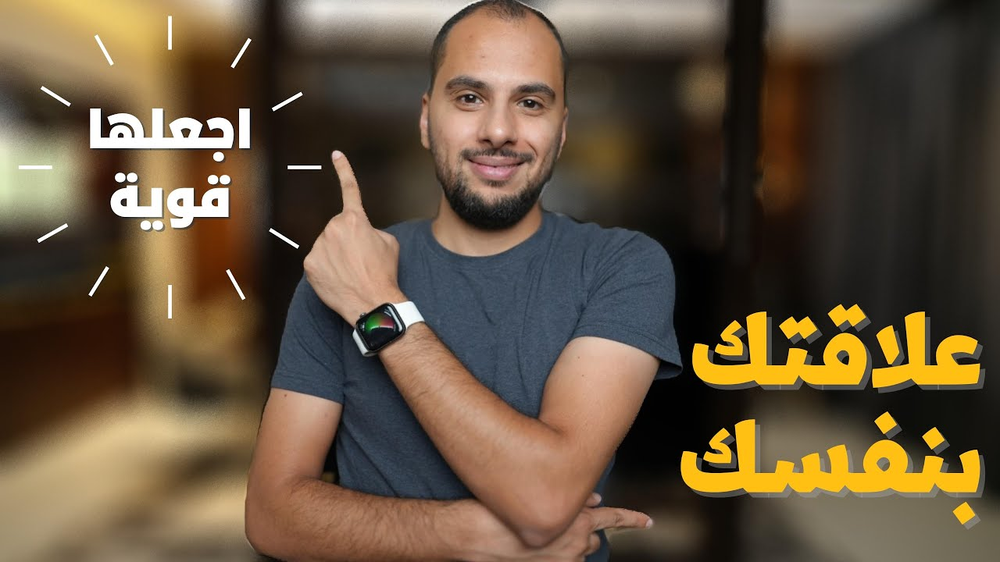

تطوير الذات
ازاي تقوي علاقتك بنفسك؟
في عيد ميلادي الـ32 دوّرت على أهم هدية ممكن أقدّمها لنفسي، ولقيتها في علاقتي بنفسي. 3 نصايح: اعرف نفسك بمميزاتك وعيوبك، بطّل جلد الذات، وما تجيش على نفسك طول الوقت.

شغّل الحلقةفي عيد ميلادي الـ32 فكرت: إيه اللي ممكن أقدّمه لنفسي في المناسبة دي؟ وما لقيتش أفضل من إن أكون متصالح مع نفسي، وعلاقتي بيها تكون حلوة وسوية. ولما بحثت ودوّرت في الموضوع لقيت أفكار ونصايح مهمة جدًا، فقررت أشاركها معاك؛ يمكن تساعدك في أهم نوع من أنواع العلاقات: علاقتك بنفسك.
في مسلسل House of the Dragon، ختموا الإنترو بتاع الحلقة الأولى بعبارة تستحق التأمل: «لا شيء قادر على تدمير عائلة التنين إلا أفرادها».1 وبصراحة العبارة دي تنطبق على كل واحد فينا: مفيش حاجة في الدنيا تقدر تدمّرك إلا نفسك.
ليه علاقتك بنفسك هي أهم علاقة؟ 1:02
عشان كده عاوز أبدأ بقاعدة مهمة جدًا: قوتك وسعادتك ونجاحك مرتبطين بشكل مباشر بعلاقتك بنفسك. وكل ما العلاقة دي تكون قوية وسوية، كل ما هتكون ناجح في علاقتك مع الآخرين وسعيد في حياتك.
لإن ببساطة لو إنت فاهم نفسك كويس وعلاقتك بنفسك قوية، هيبقى عندك هدوء وسلام داخلي، وبالتالي هتقدر تتعامل مع العالم الخارجي بهدوء وحكمة. ولو حصل العكس، وما بقيتش فاهم نفسك كويس وبقى جواك صراعات، ده هينعكس على حياتك من برّه.
علاقتك بنفسك بمثابة الحصن: كل ما يكون قوي من الداخل، صعب أي هجوم من الخارج يأثّر عليه. طيب، عرفنا القاعدة وعرفنا أهميتها، إزاي بقى أقوّي علاقتي بنفسي؟
إزاي تعرف نفسك في 3 خطوات؟ 1:46
أول وأهم حاجة عشان تقوّي علاقتك بنفسك إنك تعرف نفسك كويس، بالمميزات والعيوب. وتقدر تعمل ده في 3 خطوات بس.
الخطوة الأولى إنك تقعد مع نفسك وتحاول تكتشف عيوبك ومميزاتك وتكتبها في ورقة. ولإنك أحيانًا ممكن ما تاخدش بالك من بعض عيوبك أو من نقاط القوة اللي فيك، هنا ييجي دور الخطوة التانية: إنك تسأل الأشخاص القريبين منك عن نقاط قوتك ونقاط ضعفك، وتتأكد إنهم بيقولولك الحقيقة من غير أي مجاملة.
والخطوة التالتة والأخيرة هي اللجوء للاختبارات الشخصية، ومش قصدي الاختبارات المنتشرة على السوشيال ميديا. الاختبار اللي اقترحته في الحلقة هو 16Personalities، وهو بيوصف لك نقاط القوة والضعف عندك. بس خد نتيجته كبداية تفكّر منها في نفسك، مش كحكم نهائي عليك: الموقع نفسه بيقول إن أي نظرية بتقسّم الناس لأنماط هتلاقي صعوبة في وصف اللي نتايجهم قريبة من الحد الفاصل،2 واختبار MBTI (مؤشر مايرز بريغز) اللي بيستخدم نفس الحروف عليه انتقادات من علماء نفس.3
بالخطوات دي، أعتقد هيبقى عندك تصور واضح ومعرفة مبدئية بشخصيتك، ودي في حد ذاتها هتحسّن علاقتك بنفسك وهتخليك تشوف نفسك بمنظور مختلف تمامًا. وصدق اللي قال: «في اللحظة التي تعرف فيها نفسك، تكون قد عرفت أغلى شيء في الوجود».
وكمان مهم جدًا إنك ما تتضايقش من عيوبك، وتتقبّلها زي ما هي؛ وخليك عارف إن مفيش حد في الدنيا ما فيهوش عيوب. ركّز إنت بس في استغلال نقاط قوتك، والعيوب هتتلاشى مع الوقت.
ليه لازم تتخلى عن جلد الذات؟ 2:54
تاني حاجة ممكن تساعدك في تقوية علاقتك بنفسك هي إنك تتخلى عن جلد الذات. فيه كتير مننا بيجلدوا نفسهم لما بيغلطوا، أو بياخدوا قرارات غلط، أو بيقصّروا في أي حاجة.
وللأسف المشاعر دي بتخلي علاقتنا بنفسنا مش أفضل حاجة، لإن في الأوقات الصعبة والظروف الصعبة بنحتاج أكتر إننا نقدّم دعم لنفسنا. فبدل ما تزوّد في جلد الذات، حاول تاخد مبدأ «اللي حصل حصل»؛ والأهم من الندم والتأنيب إنك ما تقعش في نفس الأخطاء في المستقبل. وافتكر المقولة اللي بتقول: «كن لطيفًا مع نفسك، إذا لم تفعل فمن سيفعل؟».
إمتى يبقى إنك تيجي على نفسك غلط؟ 3:27
النصيحة التالتة: ما تجيش على نفسك طول الوقت. فيه ناس في كل اختياراتها تقريبًا بتختار إنها تيجي على نفسها عشان تريّح الآخر.
ولو إنت فاكر إن دي حاجة كويسة تبقى غلطان، لإنها احتمال كبير تخلي كل اللي حواليك يستغلوها، ويبقى سلوكهم الدايم معاك إنهم ييجوا عليك. عشان كده أوعى تخليها قاعدة في حياتك؛ خليها مجرد استثناءات، مع الأشخاص والمواقف اللي تستحق إنك تيجي على نفسك.
دول كانوا 3 نصايح، أتمنى إنهم يساعدوك في تحسين علاقتك بنفسك.
فصول الحلقة
أسئلة شائعة
إزاي أعرف نفسي كويس؟
في 3 خطوات: تقعد مع نفسك وتكتب عيوبك ومميزاتك في ورقة، وتسأل الأشخاص القريبين منك عن نقاط قوتك وضعفك من غير مجاملة، وتلجأ لاختبار شخصية زي 16Personalities. ونتيجة الاختبار بداية تفكّر منها في نفسك، مش حكم نهائي عليك.
إيه هو جلد الذات وليه بيضر علاقتك بنفسك؟
جلد الذات إنك تقسى على نفسك لما تغلط أو تاخد قرار غلط أو تقصّر في حاجة. وده بيضر علاقتك بنفسك لإن في الأوقات الصعبة بنحتاج أكتر إننا نقدّم دعم لنفسنا، والأهم من الندم إنك ما تقعش في نفس الأخطاء تاني.
هل غلط إني أجي على نفسي عشان أريّح غيري؟
لو بقت قاعدة في حياتك، أيوه: احتمال كبير اللي حواليك يستغلوها ويبقى سلوكهم الدايم إنهم ييجوا عليك. خليها مجرد استثناءات مع الأشخاص والمواقف اللي تستحق.
ليه علاقتك بنفسك مهمة؟
لإن قوتك وسعادتك ونجاحك مرتبطين بشكل مباشر بعلاقتك بنفسك. ولو إنت فاهم نفسك كويس، هيبقى عندك هدوء وسلام داخلي يخليك تتعامل مع العالم الخارجي بهدوء وحكمة.
تصحيحات
- قلت إن 16Personalities من الاختبارات اللي محطوطة على أسس علمية وإنه هيقدّم لك وصف دقيق. الأدق إن الاختبار ده بيستخدم حروف أنماط Myers-Briggs (MBTI)، والموقع نفسه بيقول إنه بنى نموذجه على نسخة معدّلة من نموذج Big Five للشخصية.2 أما اختبار MBTI الأصلي، اللي 16Personalities بياخد منه الحروف، فعليه انتقادات من علماء نفس من أكتر من 30 سنة، ومن ضمنها إن حوالي 50% من الناس ممكن يطلع لهم نمط مختلف لو عملوا الاختبار تاني بعد 5 أسابيع.3 عشان كده خد نتيجته كبداية تفكّر منها في نفسك، مش كوصف نهائي ليك.